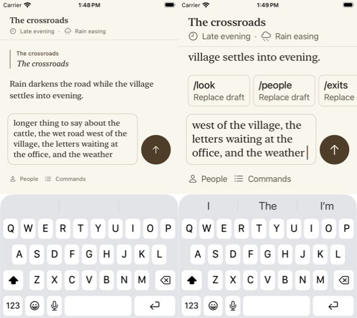

iOS Simulator (iPhone 17 Pro, iOS 26.5), fixture transcript. Not a physical iPhone.
testComposerGrowsWithALongDraft, paced for viewing: a long draft grows the field to its five-line limit, above the keyboard, with the transcript still visible. Before the fix it stopped at about two lines and scrolled inside the field.
The line limit is sized to the space above the keyboard (at most five lines, within about 30% of the height). Left: default text size, four lines. Right: xxxLarge with the command strip open, three lines; the strip, field, Send, and People/Commands row are clear of the keyboard. An earlier revision of this PR let the field reach five lines here, which pushed the People/Commands row under the keyboard's suggestion bar.
